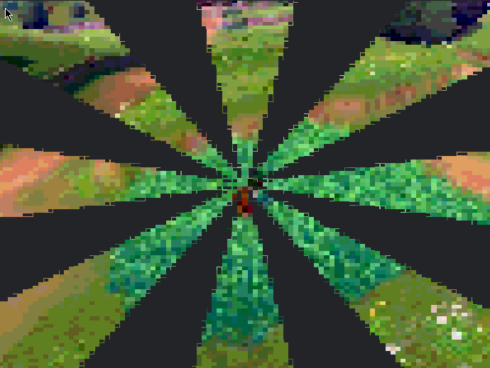
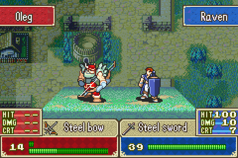

This guide shows you how to get better at combat within Nameless, and some tips and tricks to make fights better for you.
Although combat in the overworld is not the first type you will face in Nameless, it is the more simple one to explain. You'll know combat has begun when you see the large "TO BATTLE" screen and the music and interface change.
Now it's time to battle, you'll notice that you cannot move or use the normal interact screen. These are turn-based battles where each party member selects their moves in a semi-random order that is influnced by their DEX stat.
Each copy of Nameless is personalized, so your battle UI and even some mechanics might be different than what is shown here. Regardless, we've collected the most common battle scenes. Now that you're in turn order, you can use differing actions to slay the enemy. If you are fighting grunt humans, you should stick to an all-out attack. Human enemies lack hard hitting blows until later in the fight, it's better to take care of them sooner.